ผิดถูกยังไงต้องขอโทษด้วย
ทิ้งช่วงนานเกิน ลืมหมดแล้ว
----------------------------------------------------------------------------------------------------
เงื่อนไข : Level 100+ Job 50 (ยังไม่ทราบแน่ชัดว่าจ็อบของอะไร) ผ่านมังกรเอมิลร่างแรกมาแล้ว
เริ่มเควสได้ที่เมืองเหนือ
ถ้าเงื่อนไขครบ จะมี Npc แมว (ケット・シー) โผล่มาให้เราคุย (ถ้าเงื่อนไขไม่ผ่าน แมวจะไม่โผล่)
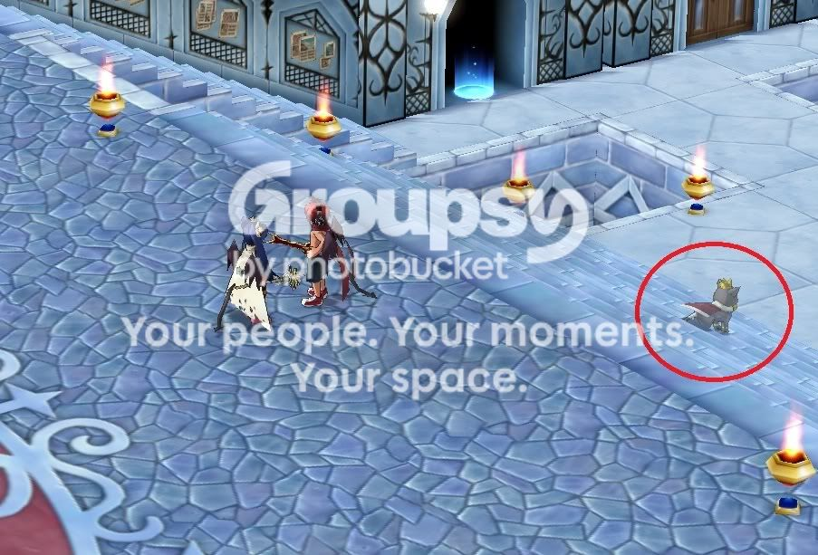
คุยกะมันไปเรื่อยๆ มันจะวิ่งหนีเราไป
ให้เราเข้าไปในบาร์ (บาร์ล่าง) คุยกับ NPC ชื่อ ヴァレリア
แล้วเดินไปแถวๆพ่อค้าไข่มังกร จะเจอกับมันอีก

คุยกับมันแล้วมันจะหนีไป
เราก็เดินตามไปคุยกับมันอีกที
ซักพัก มันจะเข้าไปที่ปราสาทราชินี (เหมือนจะคนละห้องกับที่ราชินีอยู่)
คุยกับมันรอบนี้ มันจะหนีเข้าวงเวทย์ไป
เราก็ต้องวิ่งตามมันไปตามระเบียบ
เข้าไปแล้ว จะพบกับแมพสีขาวๆ
ให้้เราเดินตามหาแมว โดยให้เดินตรงไปข้างหน้าเรื่อยๆ
พอเดินไปได้ซักพัก จะเจอแมวเจ้าเก่า นอนรออยู่

คุยกับมันแล้วจะมีคำถามสามข้อ ข้อแรกให้เลือก 起こさない ข้อสองให้เลือก 現実です ส่วนข้อสามนั้นเลือกอะไรก็ได้ ตรงนี้ถ้าเลือกผิด จะได้วิ่งมาหามันใหม่
ถ้าเราตอบถูก จะเด้งไปที่ห้องๆนึง(ห้องสีขาวโล่งๆเหมือนเดิม) ซึ่งจะมีหนังสือกับแมว(เจ้าเก่า) แล้วก็โกเลมของชาวยุ่น(ตอนแรก ผมล่ะนึกว่าเป็น NPC)
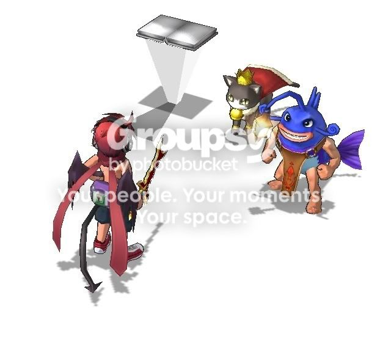
ให้เข้าไปคุยกับหนังสือ แล้วเราจะถูกส่งไปหา อาวุธ 110 ร่างคน

เราคุยกับมันไป แล้วก็ออกมาที่ห้องหนังสืออีกครั้ง
ให้เราคุยกับหนังสือแล้วเลือก 「空白の瞬間（トキ）」
จะถูกส่งไปที่ห้องๆหนึ่ง ที่มีมอนสเตอร์หน้าตาเหมือนสเปลแคสเตอร์เยอะๆ
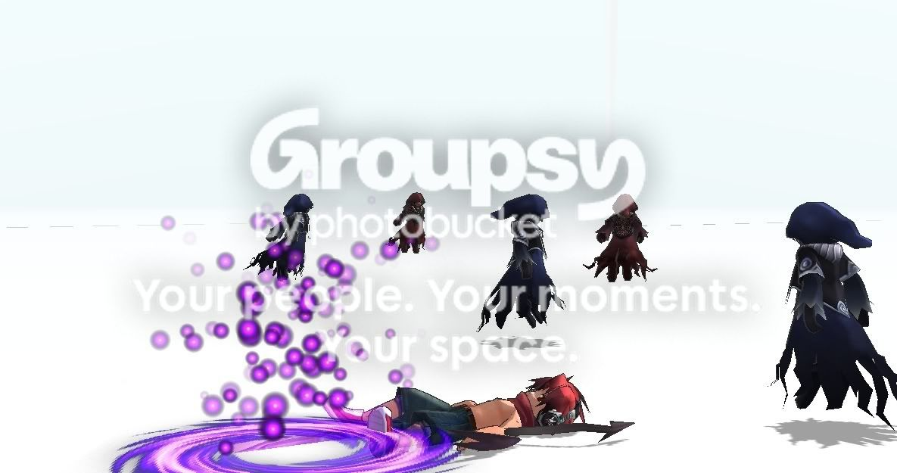
ซึ่งเจ้าพวกนี้มันจะดรอปลูกไฟเล็ก ใหญ่ ให้เรานำลูกไฟไปผสมเป็นยันต์ โดยใช้ลูกไฟเล็กห้าสิบลูกหรือลูกไฟใหญ่ลูกเดียวต่อยันต์หนึ่งอัน ซึ่งยันต์นี้จะสุ่มผสมได้สองแบบ สีแดงเป็นของ Fighter กับ Spell Caster ส่วนอีกแบบหนึ่งเป็นของสาย Backpacker
(โกเลมที่ตั้งอยู่ข้างหน้า จะขายยันต์สำหรับคนขี้เกียจหา)
สาย FT กับ SU ต้องนำยันต์ที่ได้้มา ไปเปิดเควสสู้กับร่างปลอมของตัวเอง (ยันต์หนึ่งแผ่นใช้ได้เพียงหนึ่งครั้งต่อคน)
คนที่จะเข้าไปสู้(หรือช่วย) ต้องมียันต์และต้องรับเควสทุกคน

เควสนี้ มีเวลากำหนดไว้ที่ 10 นาที ต้องวิ่งหาร่างปลอมในแมพที่กว้าง และมีมอนก่อกวนเยอะ ทำให้ผ่านยากลำบากมาก
สำหรับสาย BP นั้น เควสนี้(เหมือนจะ)ไม่ได้ทำนะครับ ข้ามไปเลย
เมื่อผ่านมาแล้ว ต่อไป เราต้องสู้กับอาวุธ 110 ร่างคนครับ ตามสายอาชีพนั้นๆ
แมพที่เราิอยู่ มีคุณสมบัติเลือดเด้งตามธรรมชาติ ให้เตรียมไปแค่ยา Hp ก็พอ
ฺสาย Swordman สู้กับไอ้คามุย ระดับความยาก Medium

สาย Fencer สู้กับน้องรีเซล ระดับความยาก Medium
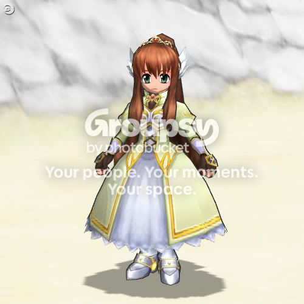
สาย Scout สู้กับไอ้ดุ้นคีโน่ ระดับความยาก Easy
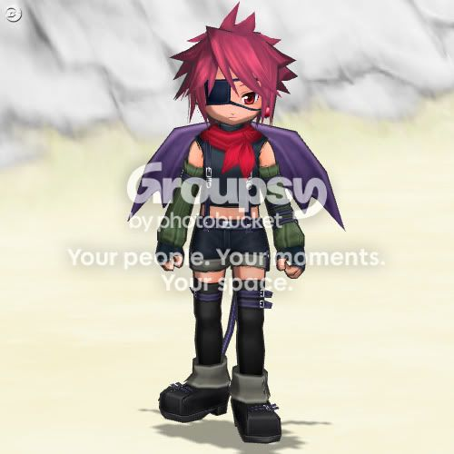
สาย Archer สู้กับลุงกรีเวอร์ ระดับความยาก Easy
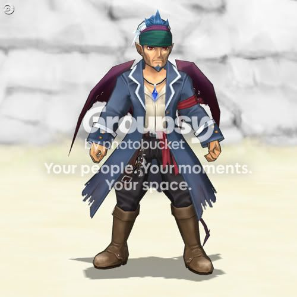
สาย Wizard Shaman Warlock สู้กับน้องเรเน็ต ระดับความยาก Very Hard สำหรับ Wizard Shaman ส่วนของ Warlock อยู่ในระดับ Hard

สาย Vates สู้กับน้องโฟรล ระดับความยาก Easy
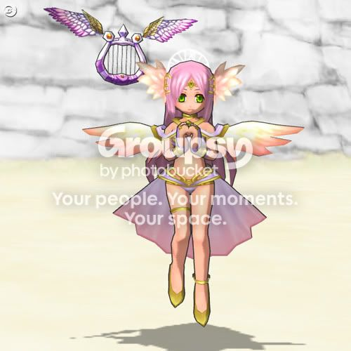
สาย Tatarabe สู้กับลุง(?)สึบากิ ระดับความยาก Easy
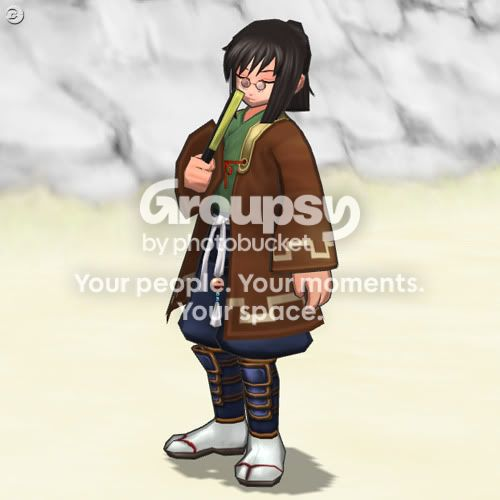
สาย Farmer และ Merchant สู้กับคุณย่า(?)คาน่อน ระดับความยาก Medium สำหรับ Farmer Very Easy สำหรับ Merchant

สาย Ranger สู้กับน้องพรีช ระดับความยาก Very Easy
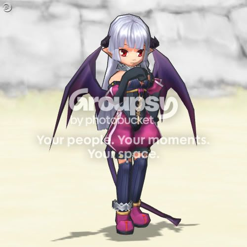
ปล.ระดับความยาก จัดโดยวิิกิ ซึ่งน่าจะตรงตามนั้น
ถ้าสู้กับอาวุธ 110 แล้วแพ้ จะได้กลับไปหายันต์ใหม่
สาย FT SU ได้สู้กับร่างปลอมอีกรอบถ้าผ่านร่างปลอมถึงได้เข้ามาสู้อาวุธ ส่วนสาย BP (น่าจะ)ได้เข้ามาลุยอาวุธต่อเลย

เมื่อผ่านมาได้ มาคุยกับหนังสืออีกครั้ง จะมีตัวเลือกใหม่ขึ้นมา ให้เรากดเข้าไป
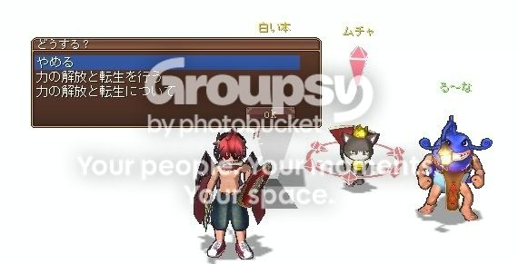
ข้อสองจะเป็นกลับไปจุติใหม่(ต้องถอดเสื้อผ้าก่อน ตามสูตร) ข้อสามเป็นแสดงอวาตาร์ที่เราสามารถใช้ได้ สามารถทดลองแต่งได้
ซึ่งเราจะได้รับอวาตาร์ตามระดับเลเวลที่เราเก็บถึง


ซึ่งอวาตาร์นั้น เราสามารถกลับมาเปลี่ยนใหม่กี่ครั้งก็ได้ แต่จะเปลี่ยนได้เฉพาะเลเวลที่เราเก็บถึงเท่านั้น เช่นถ้าเล่นโดมิเนี่ยแล้วเปลี่ยนตอนเลเวล 102 จะไม่สามารถเปลี่ยนปีกเป็น Ex หรือเปลี่ยนหาง ได้ แต่สามารถเปลี่ยนสีปีกได้ สามสี แดง น้ำเงิน และสีม่วงเท่าันั้น
เผ่าเอมิลนั้น หลังเลเวล 102 จะได้รับมาเป็นสิ่งของ ซึ่งจะได้รับมาทั้งหมดที่เลเวลถึง เช่น เปลี่ยนตอนเลเวล 105 จะได้ลูกตามาทั้งสามแบบ แต่จะไม่ได้ของหลังจากนั้นเลย
ซึ่งพอเราเปลี่ยนแล้ว
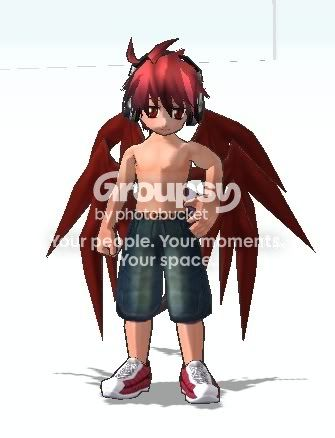
เลเวลจะกลับมาเป็นเลเวล 1 สกิลจะยังอยู่ครบ (แต่ต้องอัพใหม่) และจะสามารถอััพสกิลได้ทั้งของ Expert และ Technical โดยไม่มีการจำกัดแค่ 5 สกิล เหมือนเราเป็นทั้งสองคลาสในรอบเดียวนั่นเอง
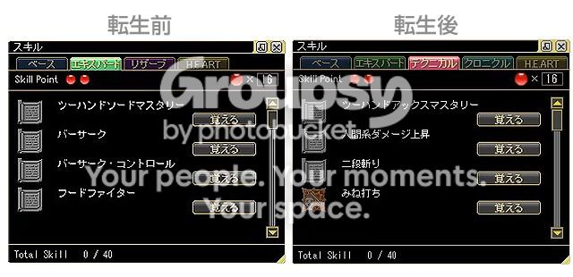
เปรียบเทียบก่อนและหลัง
ก่อนเปลี่ยนจะมี Base Expert Reserve H.E.ART ตามลำดับ
หลังเปลี่ยนจะมี Base Expert Technical Chronicle H.E.ART ตามลำดับ
--------------------------------------------------------------------------------
ขอจบเพียงแค่นี้ละกัน
ขาดเหลืออะไรช่วยเพิ่มเติมด้วยนะครับ
.
.


 ขอบคุณมาก ๆ ค่ะ
ขอบคุณมาก ๆ ค่ะ